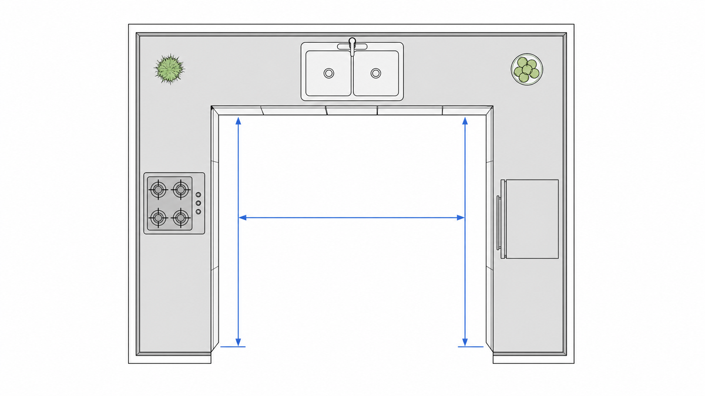
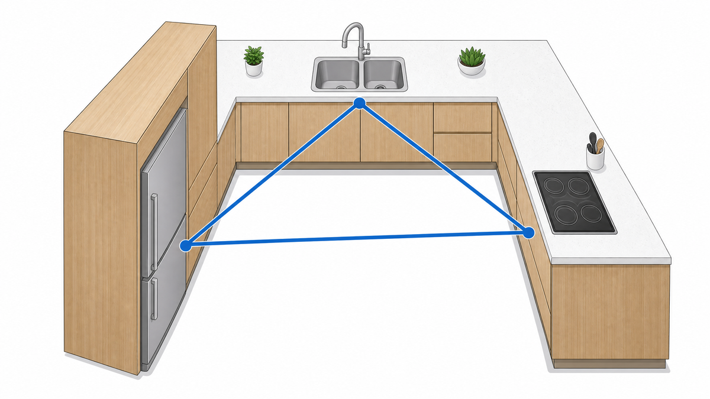
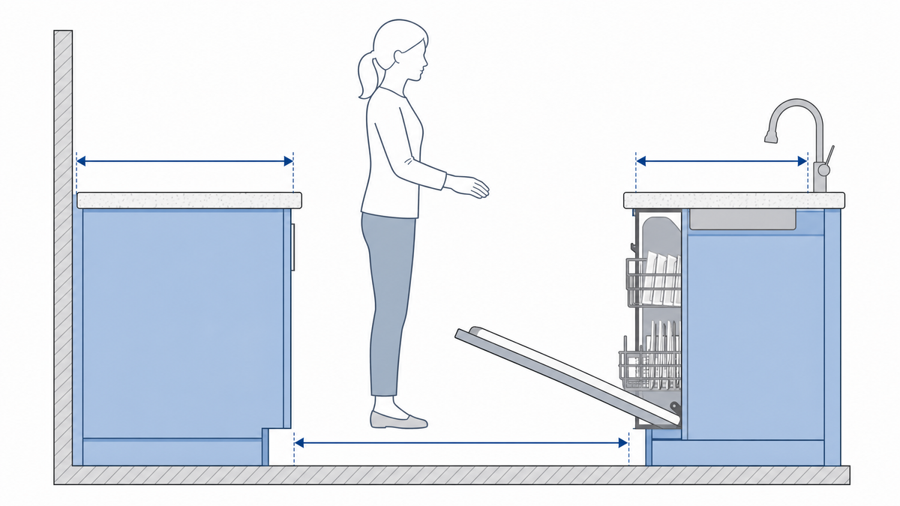
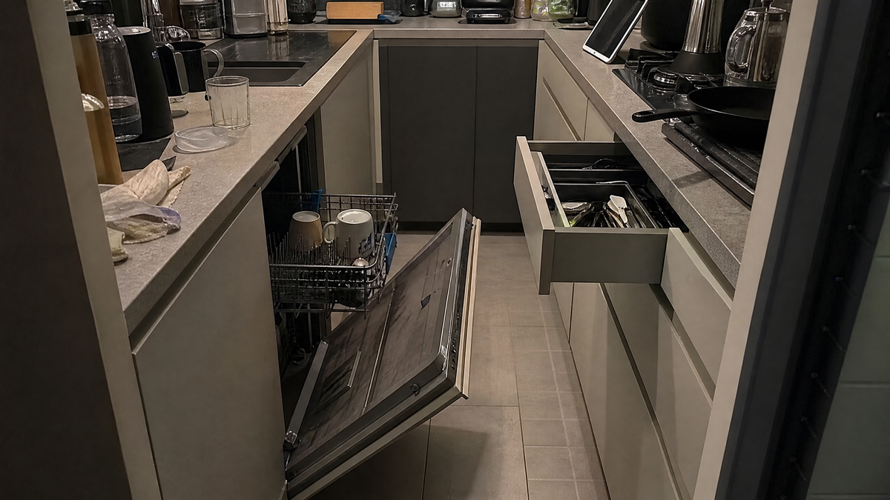

П-образная кухня влезает в помещение от 2400 мм между стенами — это 600 мм гарнитура + 1200 мм прохода + 600 мм гарнитура по габариту с фасадами. Комфортный проход 1000–1200 мм, меньше 900 мм — посудомойку не открыть. Рабочий треугольник мойка–плита–холодильник: сумма сторон 3600–6600 мм, мойка–плита 1200–1500 мм. Третья сторона короче 900 мм не даёт ничего, кроме тесноты. Переделка прохода 750 мм после монтажа — 80 000–200 000 руб.
Когда П-образная кухня работает, а когда становится коридором
П-образный гарнитур занимает три стены из четырёх: две боковые линии и фронтальную. Это максимум столешницы на минимальной площади — при линиях по 3000 мм получается 6–7 погонных метров. Но каждая добавленная сторона отнимает 600 мм свободного места, и на кухне 6 м² три линии превращаются в шкаф-коридор.
| Условие | Норматив или цифра | Что будет при нарушении |
|---|---|---|
| Ширина помещения между стенами | от 2400 мм, оптимум 2600–3000 мм | проход 750–850 мм, посудомойка не открывается |
| Площадь отдельной кухни | от 8 м², оптимум 10–12 м² | нет места под стол, «съедается» зона хранения |
| Длина третьей (фронтальной) стороны | 1200–1800 мм | 900 мм и меньше — только узкий пенал, смысла в П нет |
| Проход между линиями | 1000–1200 мм | двое не разойдутся, ящики бьют по ногам |
| Высота потолка | от 2500 мм | верхний ярус 2200–2400 мм не встанет, минус 300–400 л хранения |
Отдельная кухня 8–9 м² при ширине 2400–2600 мм — нижняя граница формата: две линии по 600 мм, проход 1000–1100 мм, третья сторона 1200–1500 мм под мойку у окна. Кухня-гостиная от 16 м² позволяет третью сторону 1800–2400 мм, но между краем П-образной композиции и диваном нужно оставить не меньше 900 мм свободного пола.
Геометрия: 600 + 1200 + 600 и что ещё съедают фасады
Считать надо по габариту, а не по корпусу: 560 мм корпус + накладной фасад 16–19 мм + свес столешницы 20–30 мм = 600–630 мм на сторону. На проход 1200 мм между стенами нужно 2400–2460 мм — эти 60–120 мм и «съедают» итоговую ширину.

| Ширина между стенами | Габарит двух линий | Фактический проход | Вердикт |
|---|---|---|---|
| 2200 мм | 1240 мм | 960 мм | только с одной линией 450 мм или без П-схемы |
| 2400 мм | 1240 мм | 1160 мм | работает, проход в норме |
| 2600 мм | 1240 мм | 1360 мм | комфорт, техника открывается одновременно |
| 2800 мм | 1240 мм | 1560 мм | 300 мм лишние — под барную столешницу или линию 400 мм |
| 3200 мм | 1240 мм | 1960 мм | проход избыточен, нужен остров или стол |
Рабочий треугольник: мойка, плита, холодильник
В П-образной кухне вершины треугольника разнесены по трём линиям, и расстояния растут быстрее, чем кажется на плане. Норма — сумма трёх сторон 3600–6600 мм; при 7000 мм и больше вы носите кастрюлю через всю кухню и наматываете лишние километры за год.

| Сторона треугольника | Минимум | Оптимум | Что ломается |
|---|---|---|---|
| Мойка — плита | 800 мм | 1200–1500 мм | меньше 800 мм нет места под разделку, брызги на варочную панель |
| Плита — холодильник | 1200 мм | 1500–2100 мм | вплотную — перегрев компрессора, жир на дверце |
| Мойка — холодильник | 1200 мм | 1500–2100 мм | меньше — мокрые руки и открытая дверца на одном пятачке |
| Сумма трёх сторон | 3600 мм | 4000–6000 мм | больше 6600 мм — лишние шаги и перенос горячего |
- Мойку — на фронтальную сторону под окно или ближе к нему: свет и вентиляция.
- Плиту — на боковую линию, не ближе 400 мм от угла и 150 мм от боковой стены: защита боковин и ручек сковородок.
- Холодильник — на противоположной боковой линии крайним в композиции, чтобы дверца 700–800 мм открывалась в проход, а не в гарнитур.
- Между мойкой и плитой — 1200–1500 мм столешницы: разделочная зона, здесь же посудомойка 600 мм и мусорный модуль.
- Проверить поток: продукты с холодильника, мойка, разделка, плита. Если маршрут дважды пересекает проход — холодильник переставляем на другую линию.
Проходы и открывание техники: считаем по вылету дверок
Проход считается не «по полу», а по вылету открытых дверок и корзин: посудомойка с открытой дверцей добавляет 600 мм к своей стороне, выдвинутый ящик — 450–500 мм, опущенная дверца духовки — 550–600 мм. Плюс человек в плечах — ещё 500–600 мм.

| Элемент | Вылет в проход | Нужно свободно | Требуемый проход |
|---|---|---|---|
| Посудомойка, дверца открыта | 600 мм плюс 500 мм на человека | 1100 мм | от 1100 мм |
| Ящик 600 мм, выдвинут полностью | 500 мм | 900–1000 мм | от 1000 мм |
| Духовка, дверца опущена | 550–600 мм | 1000 мм | от 1100 мм |
| Холодильник, дверца 700 мм | 700–800 мм по дуге | 1000 мм | только по краю П-схемы |
Проход 1000 мм работает, если техника открывается в разные стороны: посудомойку и духовку на противоположных линиях разводим по длине минимум на 900 мм.
Три рабочие схемы под ширину кухни
| Схема | Ширина помещения | Третья сторона | Для кого |
|---|---|---|---|
| Узкое П 2,4–2,6 м | линии 600 и 450 мм | мойка у окна 1200 мм | отдельная кухня 8–9 м², готовит один человек |
| Классическое П 2,7–3,0 м | две линии по 600 мм | 1200–1800 мм под мойку и посудомойку | семья 3–4 человека, готовят каждый день |
| Широкое П 3,2 м и больше | две линии по 600 мм | 1800–2400 мм: плита и рабочая зона | кухня-гостиная, готовят вдвоём |
В узкой схеме линия 450 мм (корпус 400 мм) — не компромисс: в неё встают кофемашина, микроволновка, бакалея, а столешница 450 мм удобна для нарезки. Пеналов глубиной 400 мм под встраиваемую технику не делают: духовке нужен корпус 560 мм.
Углы и модули: где теряются 200–250 мм
| Угловое решение | Габарит | Полезный объём | Цена 2026 |
|---|---|---|---|
| «Слепой» угол с доступом через соседний модуль | 900 × 900 мм | минус 200–250 мм глубины, доставать неудобно | 0 руб. |
| Карусель на два уровня | 900 × 900 мм | две полки по 0,28 м² | 9 000–16 000 руб. |
| Угловые выдвижные корзины (Magic Corner) | 900 × 900 мм | до 60 кг, полный выезд | 22 000–38 000 руб. |
| Диагональный угловой модуль | 900 × 900 мм, фасад 500–600 мм | съедает 100 мм прохода по диагонали | +8 000–14 000 руб. к модулю |
- Глубина корпуса 560 мм, столешница 600 мм, свес над фасадом 20–30 мм — иначе капли идут по дверце.
- Цоколь 100–150 мм: меньше — не влезает плинтус и вентиляция, больше — неудобно стоять у столешницы.
- Рабочая высота 860–900 мм считается как рост/2 + 50 мм: для роста 170 см это 900 мм, для 160 см — 860 мм.
- Верхний ярус 2200–2400 мм от пола, антресоли до 2500–2700 мм при потолке от 2700 мм.
- Ручки-профиль экономят 40–50 мм вылета в проход — в узком П это реальные сантиметры.
Электрика, вода и вентиляция под три стороны
| Прибор | Мощность | Кабель | Автомат |
|---|---|---|---|
| Варочная панель, все конфорки | до 7,2 кВт | 3 × 6 мм², отдельная линия | 32 А |
| Духовой шкаф | 2,5–3,6 кВт | 3 × 2,5 мм², отдельная линия | 16 А |
| Посудомоечная машина | 2,0–2,2 кВт | 3 × 2,5 мм² | 16 А |
| Холодильник | 0,3–0,4 кВт | 3 × 1,5 мм², отдельная линия | 10 А |
| Вытяжка и подсветка | 0,2–0,3 кВт | 3 × 1,5 мм² | 6–10 А |
Розетки над столешницей — на 100–150 мм выше её уровня (1000–1100 мм от пола), с шагом не реже 1200 мм. За корпусом духовки или посудомойки розетку ставить нельзя: СП 256.1325800.2016 и ПУЭ 7 (глава 7.1) требуют доступа для отключения — выносим в соседний шкаф или цоколь. Вся кухонная группа — через УЗО 30 мА.
- Воздухообмен кухни: 60 м³/ч с электроплитой и 90 м³/ч с газовой по СП 54.13330.2022.
- Приток: решётка в цоколе от 200 см² или приточный клапан в стене, иначе вытяжка на 500–1000 м³/ч работает в закрытом объёме.
- Канализация: уклон 20–30 мм на метр, сифон с гидрозатвором 50 мм, отдельный отвод под посудомойку на высоте 400–600 мм от пола по СП 30.13330.2020.
- Перенос мойки с водой и канализацией — 12 000–25 000 руб., перенос розетки — 2 500–4 500 руб. за точку.
Смета 2026: из чего складывается П-образная кухня
| Позиция | Цена 2026 | Комментарий |
|---|---|---|
| Гарнитур ЛДСП 16 мм | 18 000–26 000 руб. за погонный метр | 6 п.м — 108 000–156 000 руб. |
| Гарнитур МДФ в эмали | 32 000–48 000 руб. за погонный метр | 6 п.м — 192 000–288 000 руб. |
| Столешница ЛДСП 38 мм | 3 500–5 500 руб. за погонный метр | стыки и кромка считаются отдельно |
| Столешница из кварцевого агломерата | 18 000–28 000 руб. за погонный метр | вырез под мойку 3 000–6 000 руб. |
| Фурнитура Blum или Hettich с доводчиками | +12–18% к гарнитуру | на 6 п.м — 15 000–28 000 руб. |
| Электрика и вода под проект | 35 000–70 000 руб. | штробление, кабель, автоматы, УЗО |
Экономить разумно на верхнем ярусе и на столешнице в нерабочей зоне. Не экономить на фурнитуре ящиков и угловых механизмах: дешёвый доводчик выходит из строя за 2–3 года, замена — 3 500–6 000 руб. за механизм плюс разборка модуля.
Шесть ошибок с ценой исправления

| Ошибка | Последствие | Стоимость исправления |
|---|---|---|
| Проход 750–850 мм | посудомойка не открывается, двое не расходятся | 80 000–200 000 руб. — переделка линий |
| Посудомойка в углу | дверца бьёт в соседний гарнитур | 25 000–45 000 руб. — замена модуля |
| Розетка за духовкой | прибор не отключить без демонтажа | 8 000–15 000 руб. — штробление заново |
| Холодильник в глубине П | дверца перекрывает проход, продукты носят круг | 20 000–60 000 руб. — перестановка с переносом розетки |
| Плита вплотную к пеналу | перегрев боковины, ручки сковородок бьют по фасаду | 6 000–18 000 руб. — вставка 150–300 мм |
| Коммуникации после заказа гарнитура | не совпадают привязки, столешницу режут заново | 15 000–40 000 руб. |
Порядок работ: от замера до подключения
- Замер помещения по трём уровням: пол, 1000 мм, потолок — перекос 10–20 мм на 3 м типичен.
- План с габаритами: линии 600 и 450 мм, проход 1000–1200 мм, третья сторона, привязки мойки и плиты.
- Проверка открывания в масштабе 1:20: посудомойка, духовка, ящики, холодильник.
- Разводка электрики: варочная 3 × 6 мм², духовка 3 × 2,5 мм², посудомойка, холодильник отдельной линией, УЗО 30 мА.
- Вода и канализация по привязкам мойки и посудомойки, уклон 20–30 мм на метр.
- Вентиляция: отвод вытяжки, приток от 200 см², вентканал не перекрыт.
- Монтаж гарнитура: цоколь 100–150 мм, выравнивание по уровню, стяжка модулей между собой.
- Столешница с вырезами, подключение техники, проверка прохода рулеткой, а не на глаз.
Чек-лист перед заказом
- ширина между стенами не меньше 2400 мм, фактический проход 1000–1200 мм;
- сумма сторон рабочего треугольника 3600–6600 мм, мойка–плита 1200–1500 мм;
- третья сторона 1200–1800 мм, короче 900 мм — отказ от П-схемы;
- вылеты дверок посудомойки, духовки и холодильника не пересекаются;
- холодильник крайний, дверца открывается в проход;
- углы закрыты каруселью или корзинами, а не «слепой» зоной;
- розетки на 100–150 мм выше столешницы, не за корпусом приборов;
- линии 3 × 6 и 3 × 2,5 мм², автоматы 32 и 16 А, УЗО 30 мА;
- воздухообмен 60 м³/ч с электроплитой или 90 м³/ч с газом, приток от 200 см²;
- в смете запас 5–10% на доборы, вставки и подключение техники.
Частые вопросы
Можно ли сделать П-образную кухню в помещении 2,2 м шириной?
Только с одной неглубокой линией 400–450 мм: 600 + 450 + 1000 = 2050 мм плюс фасады. Две полноценные линии по 600 мм дают проход 860 мм — посудомойка не откроется, ящики придётся выдвигать по одному.
Что делать, если третья сторона всего 900 мм?
Поставить пенал 600 мм и оставить 300 мм на вставку либо отказаться от П-схемы в пользу Г-образной с островом. Три линии по 900 мм дают меньше столешницы, чем две по 3000 мм.
Где должна быть мойка в П-образной кухне?
На фронтальной стороне под окном или ближе к нему: свет, вентиляция, вид во двор. Если окно по центру — мойка по оси, плита на боковой линии не ближе 400 мм от угла.
Нужен ли остров, если П-образная кухня уже стоит?
Только при проходе 1300 мм и больше: остров 1200 × 700 мм оставит по 1000 мм с каждой стороны. При проходе 1100 мм остров превращает кухню в непроходимый лабиринт.
Какая вытяжка нужна над газовой плитой в П-образной кухне?
Производительность от 600 м³/ч при воздухообмене 90 м³/ч по СП 54.13330.2022, отвод в вентканал, приток от 200 см² в цоколе или клапане. Рециркуляция с угольным фильтром допустима, но фильтр меняется раз в 3–4 месяца.
Можно ли сэкономить, сделав третью сторону открытыми полками?
Да: открытая система 1200 мм стоит 12 000–20 000 руб. против 28 000–45 000 руб. за шкафы с фасадами, но пыль на посуде и нет скрытого хранения. Для кухни 8–9 м² это рабочий вариант.
Источники
Материал подготовлен с опорой на следующие документы и данные:
- СП 54.13330.2022 Здания жилые многоквартирные
- СП 256.1325800.2016 Электроустановки жилых и общественных зданий
- СП 30.13330.2020 Внутренний водопровод и канализация зданий
- СП 60.13330.2020 Отопление, вентиляция и кондиционирование воздуха
- ГОСТ 16371-2014 Мебель. Общие технические условия
- ПУЭ 7 Правила устройства электроустановок, глава 7.1
Дисклеймер
Материалы журнала «Ремонт на примерах» носят информационный характер. Приведённые цены, сроки и нормативы являются ориентировочными: они зависят от региона, состояния объекта, уровня исполнителей и текущей рыночной ситуации, поэтому не могут служить точной сметой или гарантией результата. Перед началом работ проконсультируйтесь со специалистами и проверяйте актуальные требования нормативных документов. Редакция не несёт ответственности за решения, принятые на основании этих материалов.